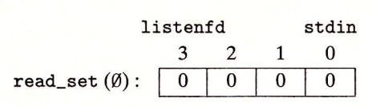

12.2 基于 I/O 多路复用的并发编程
假设要求你编写一个 echo 服务器，它也能对用户从标准输入键入的交互命令做出响应。在这种情况下，服务器必须响应两个互相独立的 I/O 事件：1）网络客户端发起连接请求，2）用户在键盘上键入命令行。我们先等待哪个事件呢？没有哪个选择是理想的。如果在 accept 中等待一个连接请求，我们就不能响应输入的命令。类似地，如果在 read 中等待一个输入命令，我们就不能响应任何连接请求。
针对这种困境的一个解决办法就是 I/O 多路复用（I/O multiplexing）技术。基本的思路就是使用 select 函数，要求内核挂起进程，只有在一个或多个I/O 事件发生后，才将控制返回给应用程序，就像在下面的示例中一样：
- 当集合 {0，4} 中任意描述符准备好读时返回。
- 当集合 {1，2，7} 中任意描述符准备好写时返回。
- 如果在等待一个 I/O 事件发生时过了 152.13 秒，就超时。
select 是一个复杂的函数，有许多不同的使用场景。我们将只讨论第一种场景：等待一组描述符准备好读。全面的讨论请参考【62，110】。
#include <sys/select.h>
int select(int n, fd_set *fdset, NULL, NULL, NULL);
// 返回已准备好的描述符的非零的个数，若出错则为 -1。
FD_ZERO(fd_set *fdset); /* Clear all bits in fdset */
FD_CLR(int fd, fd_set *fdset); /* Clear bit fd in fdset */
FD_SET(int fd, fd_set *fdset); /* Turn on bit fd in fdset */
FD_ISSET(int fd, fd_set *fdset); /* Is bit fd in fdset on? */
// 处理描述符集合的宏。
select 函数处理类型为 fd_set 的集合，也叫做描述符集合。逻辑上，我们将描述符集合看成一个大小为 n 的位向量（在 2.1 节中介绍过）：
$$ b_{n-1},\cdots,b_1,b_0
$$
每个位$$\small b_k$$对应于描述符 k。当且仅当$$\small b_k = 1$$，描述符 k 才表明是描述符集合的一个元素。只允许你对描述符集合做三件事：1）分配它们，2）将一个此种类型的变量赋值给另一个变量，3）用 FD_ZERO、FD_SET、FD_CLR 和 FD_ISSET 宏来修改和检查它们。
针对我们的目的，select 函数有两个输入：一个称为读集合的描述符集合（fdset）和该读集合的基数（n）（实际上是任何描述符集合的最大基数）。select 函数会一直阻塞，直到读集合中至少有一个描述符准备好可以读。当且仅当一个从该描述符读取一个字节的请求不会阻塞时，描述符 k 就表示准备好可以读了。select 有一个副作用，它修改参数 fdset 指向的 fd_set，指明读集合的一个子集，称为准备好集合（ready set），这个集合是由读集合中准备好可以读了的描述符组成的。该函数返回的值指明了准备好集合的基数。注意，由于这个副作用，我们必须在每次调用 select 时都更新读集合。
理解 select 的最好办法是研究一个具体例子。图 12-6 展示了可以如何利用 select 来实现一个迭代 echo 服务器，它也可以接受标准输入上的用户命令。
#include "csapp.h"
void echo(int connfd);
void command(void);
int main(int argc, char **argv)
{
int listenfd, connfd;
socklen_t clientlen;
struct sockaddr_storage clientaddr;
fd_set read_set, ready_set;
if (argc != 2) {
fprintf(stderr, "usage: %s <port>\n", argv[0]);
exit(0);
}
listenfd = Open_listenfd(argv[1]);
FD_ZERO(&read_set); /* Clear read set */
FD_SET(STDIN_FILENO, &read_set); /* Add stdin to read set */
FD_SET(listenfd, &read_set); /* Add listenfd to read set */
while (1) {
ready_set = read_set;
Select(listenfd + 1, &ready_set, NULL, NULL, NULL);
if (FD_ISSET(STDIN_FILENO, &ready_set))
command(); /* Read command line from stdin */
if (FD_ISSET(listenfd, &ready_set)) {
clientlen = sizeof(struct sockaddr_storage);
connfd = Accept(listenfd, (SA *)&clientaddr, &clientlen);
echo(connfd); /* Echo client input until EOF */
Close(connfd);
}
}
}
void command(void) {
char buf[MAXLINE];
if (!Fgets(buf, MAXLINE, stdin))
exit(0); /* EOF */
printf("%s", buf); /* Process the input command */
}
图 12-6 使用 I/O 多路复用的迭代 echo 服务器。服务器使用 select 等待监听描述符上的连接请求和标准输人上的命令
一开始，我们用图 11-19 中的 open_listenfd 函数打开一个监听描述符（第 16 行），然后使用 FD_ZERO 创建一个空的读集合（第 18 行）：

接下来，在第 19 和 20 行中，我们定义由描述符 0（标准输入）和描述符 3（监听描述符）组成的读集合：

在这里，我们开始典型的服务器循环。但是我们不调用 accept 函数来等待一个连接请求，而是调用 select 函数，这个函数会一直阻塞，直到监听描述符或者标准输入准备好可以读（第 24 行）。例如，下面是当用户按回车键，因此使得标准输入描述符变为可读时，select 会返回的 ready_set 的值：

一旦 select 返回，我们就用 FD_ISSET 宏指令来确定哪个描述符准备好可以读了。如果是标准输入准备好了（第 25 行），我们就调用 command 函数，该函数在返回到主程序前，会读、解析和响应命令。如果是监听描述符准备好了（第 27 行），我们就调用 accept 来得到一个已连接描述符，然后调用图 11-22 中的 echo 函数，它会将来自客户端的每一行又回送回去，直到客户端关闭这个连接中它的那一端。
虽然这个程序是使用 select 的一个很好示例，但是它仍然留下了一些问题待解决。问题是一旦它连接到某个客户端，就会连续回送输入行，直到客户端关闭这个连接中它的那一端。因此，如果键入一个命令到标准输入，你将不会得到响应，直到服务器和客户端之间结 束。一个更好的方法是更细粒度的多路复用，服务器每次循环（至多）回送一个文本行。
练习题 12.3
在 Linux 系统里，在标准输入上键入 Ctrl+D 表示 EOF。图 12-6 中的程序阻塞在对 select 的调用上时，如果你键入 Ctrl+D 会发生什么？
回想一下，如果一个从描述符中读一个字节的请求不会阻塞，那么这个描述符就准备好可以读了。假如 EOF 在一个描述符上为真，那么描述符也准备好可读了，因为读操作将立即返回一个零返回码，表示 EOF。因此，键入 Ctrl+D 会导致 select 函数返回，准备好的集合中有描述符 0。
12.2.1 基于 I/O 多路复用的并发事件驱动服务器
I/O 多路复用可以用做并发事件驱动（event-driven）程序的基础，在事件驱动程序中，某些事件会导致流向前推进。一般的思路是将逻辑流模型化为状态机。不严格地说，一个状态机（state machine）就是一组状态（state）、输入事件（input event）和转移（transition），其中转移是将状态和输入事件映射到状态。每个转移是将一个（输入状态，输入事件）对映射到一个输出状态。自循环（self-loop）是同一输入和输岀状态之间的转移。通常把状态机画成有向图，其中节点表示状态，有向弧表示转移，而弧上的标号表示输入事件。一个状态机从某种初始状态开始执行。每个输入事件都会引发一个从当前状态到下一状态的转移。
对于每个新的客户端 k，基于 I/O 多路复用的并发服务器会创建一个新的状态机$$\small s_k$$，并将它和已连接描述符联系起来。如图 12-7 所示，每个状态机$$\small s_k$$都有一个状态（“等待描述符$$\small d_k$$准备好可读”）、一个输入事件（“描述符$$\small d_k$$准备好可以读了”）和一个转移（“从描述符$$\small d_k$$读一个文本行”）。

服务器使用 I/O 多路复用，借助 select 函数检测输入事件的发生。当每个已连接描述符准备好可读时，服务器就为相应的状态机执行转移，在这里就是从描述符读和写回一个文本行。
图 12-8 展示了一个基于 I/O 多路复用的并发事件驱动服务器的完整示例代码。一个 pool 结构里维护着活动客户端的集合（第 3 ~ 11 行）。在调用 init_pool 初始化池（第 27 行）之后，服务器进入一个无限循环。在循环的每次迭代中，服务器调用 select 函数来检测两种不同类型的输入事件：a）来自一个新客户端的连接请求到达，b）一个已存在的客户端的已连接描述符准备好可以读了。当一个连接请求到达时（第 35 行），服务器打开连接（第 37 行），并调用 add_client 函数，将该客户端添加到池里（第 38 行）。最后，服务器调用 check_clients 函数，把来自每个准备好的已连接描述符的一个文本行回送回去（第 42 行）。
#include "csapp.h"
typedef struct { /* Represents a pool of connected descriptors */
int maxfd; /* Largest descriptor in read_set */
fd_set read_set; /* Set of all active descriptors */
fd_set ready_set; /* Subset of descriptors ready for reading */
int nready; /* Number of ready descriptors from select */
int maxi; /* High water index into client array */
int clientfd[FD_SETSIZE]; /* Set of active descriptors */
rio_t clientrio[FD_SETSIZE]; /* Set of active read buffers */
} pool;
int byte_cnt = 0; /* Counts total bytes received by server */
int main(int argc, char **argv)
{
int listenfd, connfd;
socklen_t clientlen;
struct sockaddr_storage clientaddr;
static pool pool;
if (argc != 2) {
fprintf(stderr, "usage: %s <port>\n", argv[0]);
exit(0);
}
listenfd = Open_listenfd(argv[1]);
init_pool(listenfd, &pool);
while (1) {
/* Wait for listening/connected descriptor(s) to become ready */
pool.ready_set = pool.read_set;
pool.nready = Select(pool.maxfd + 1, &pool.ready_set, NULL, NULL, NULL);
/* If listening descriptor ready, add new client to pool */
if (FD_ISSET(listenfd, &pool.ready_set)) {
clientlen = sizeof(struct sockaddr_storage);
connfd = Accept(listenfd, (SA *)&clientaddr, &clientlen);
add_client(connfd, &pool);
}
/* Echo a text line from each ready connected descriptor */
check_clients(&pool);
}
}
图 12-8 基于 I/O 多路复用的并发 echo 服务器。每次服务器迭代都回送来自每个准备好的描述符的文本行
init_pool 函数（图 12-9）初始化客户端池。clientfd 数组表示已连接描述符的集合，其中整数 - 1 表示一个可用的槽位。初始时，已连接描述符集合是空的（第 5 ~ 7 行），而且监听描述符是 select 读集合中唯一的描述符（第 10 ~ 12 行）。
void init_pool(int listenfd, pool *p)
{
/* Initially, there are no connected descriptors */
int i;
p->maxi = -1;
for (i = 0; i < FD_SETSIZE; i++)
p->clientfd[i] = -1;
/* Initially, listenfd is only member of select read set */
p->maxfd = listenfd;
FD_ZERO(&p->read_set);
FD_SET(listenfd, &p->read_set);
}
图 12-9 init_pool 初始化活动客户端池
add_client 函数（图 12-10）添加一个新的客户端到活动客户端池中。在 clientfd 数组中找到一个空槽位后，服务器将这个已连接描述符添加到数组中，并初始化相应的 RIO 读缓冲区，这样一来我们就能够对这个描述符调用 rio_readlineb（第 8 ~ 9 行）。然后，我们将这个已连接描述符添加到 select 读集合（第 12 行），并更新该池的一些全局属性。maxfd 变量（第 15 ~ 16 行）记录了 select 的最大文件描述符。maxi 变量（第 17 ~ 18 行）记录的是到 clientfd 数组的最大索引，这样 check_clients 函数就无需搜索整个数组了。
void add_client(int connfd, pool *p)
{
int i;
p->nready--;
for (i = 0; i < FD_SETSIZE; i++) /* Find an available slot */
if (p->clientfd[i] < 0) {
/* Add connected descriptor to the pool */
p->clientfd[i] = connfd;
Rio_readinitb(&p->clientrio[i], connfd);
/* Add the descriptor to descriptor set */
FD_SET(connfd, &p->read_set);
/* Update max descriptor and pool high water mark */
if (connfd > p->maxfd)
p->maxfd = connfd;
if (i > p->maxi)
p->maxi = i;
break;
}
if (i == FD_SETSIZE) /* Couldn’t find an empty slot */
app_error("add_client error: Too many clients");
}
图 12-10 add_client 向池中添加一个新的客户端连接
图 12-11 中的 check_clients 函数回送来自每个准备好的已连接描述符的一个文本行。如果成功地从描述符读取了一个文本行，那么就将该文本行回送到客户端（第 15 ~ 18 行）。注意，在第 15 行我们维护着一个从所有客户端接收到的全部字节的累计值。如果因为客户端关闭这个连接中它的那一端，检测到 EOF，那么将关闭这边的连接端（第 23 行），并从池中清除掉这个描述符（第 24 ~ 25 行）。
void check_clients(pool *p)
{
int i, connfd, n;
char buf[MAXLINE];
rio_t rio;
for (i = 0; (i <= p->maxi) && (p->nready > 0); i++) {
connfd = p->clientfd[i];
rio = p->clientrio[i];
/* If the descriptor is ready, echo a text line from it */
if ((connfd > 0) && (FD_ISSET(connfd, &p->ready_set))) {
p->nready--;
if ((n = Rio_readlineb(&rio, buf, MAXLINE)) != 0) {
byte_cnt += n;
printf("Server received %d (%d total) bytes on fd %d\n",
n, byte_cnt, connfd);
Rio_writen(connfd, buf, n);
}
/* EOF detected, remove descriptor from pool */
else {
Close(connfd);
FD_CLR(connfd, &p->read_set);
p->clientfd[i] = -1;
}
}
}
}
图 12-11 check_clients 服务准备好的客户端连接
根据图 12-7 中的有限状态模型，select 函数检测到输入事件，而 add_client 函数创建一个新的逻辑流（状态机）。check_clients 函数回送输入行，从而执行状态转移，而且当客户端完成文本行发送时，它还要删除这个状态机。
练习题 12.4
图 12-8 所示的服务器中，我们在每次调用 select 之前都立即小心地重新初始化 pool.ready_set 变量。为什么？
因为变量 pool.read_set 既作为输入参数也作为输出参数，所以我们在每一次调用 select 之前都重新初始化它。在输入时，它包含读集合。在输出，它包含准备好的集合。
旁注 - 事件驱动的 Web 服务器
尽管有 12.2.2 节中说明的缺点，现代高性能服务器（例如 Node.js、nginx 和 Tornado）使用的都是基于 I/O 多路复用的事件驱动的编程方式，主要是因为相比于进程和线程的方式，它有明显的性能优势。
12.2.2 I/O 多路复用技术的优劣
图 12-8 中的服务器提供了一个很好的基于 I/O 多路复用的事件驱动编程的优缺点示例。事件驱动设计的一个优点是，它比基于进程的设计给了程序员更多的对程序行为的控制。例如，我们可以设想编写一个事件驱动的并发服务器，为某些客户端提供它们需要的服务，而这对于基于进程的并发服务器来说，是很困难的。
另一个优点是，一个基于 I/O 多路复用的事件驱动服务器是运行在单一进程上下文中的，因此每个逻辑流都能访问该进程的全部地址空间。这使得在流之间共享数据变得很容易。一个与作为单个进程运行相关的优点是，你可以利用熟悉的调试工具，例如 GDB，来调试你的并发服务器，就像对顺序程序那样。最后，事件驱动设计常常比基于进程的设计要高效得多，因为它们不需要进程上下文切换来调度新的流。
事件驱动设计一个明显的缺点就是编码复杂。我们的事件驱动的并发 echo 服务器需要的代码比基于进程的服务器多三倍，并且很不幸，随着并发粒度的减小，复杂性还会上升。这里的粒度是指每个逻辑流每个时间片执行的指令数量。例如，在示例并发服务器中，并发粒度就是读一个完整的文本行所需要的指令数量。只要某个逻辑流正忙于读一个文本行，其他逻辑流就不可能有进展。对我们的例子来说这没有问题，但是它使得在“故意只发送部分文本行然后就停止”的恶意客户端的攻击面前，我们的事件驱动服务器显得很脆弱。修改事件驱动服务器来处理部分文本行不是一个简单的任务，但是基于进程的设计却能处理得很好，而且是自动处理的。基于事件的设计另一个重要的缺点是它们不能充分利用多核处理器。